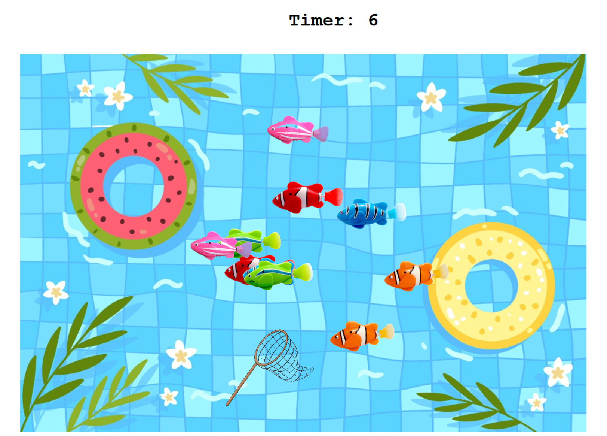
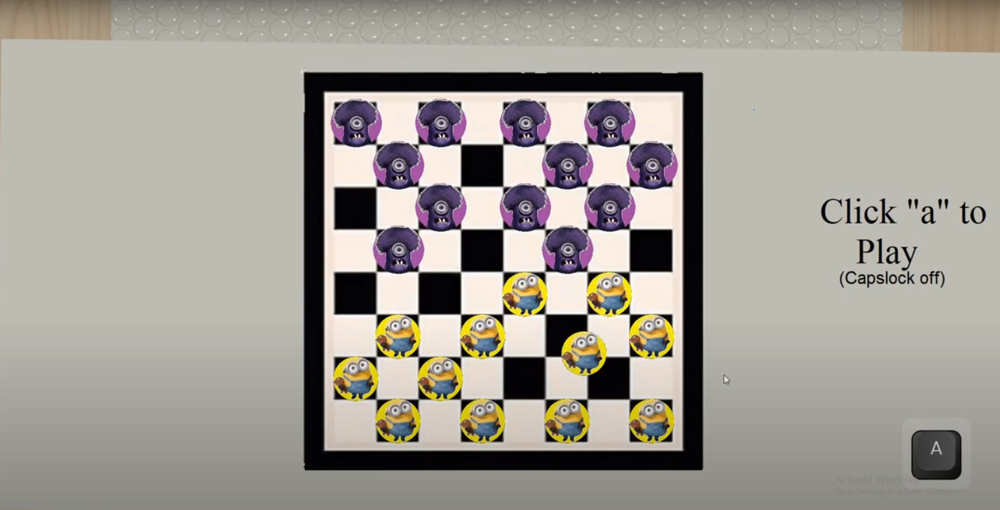

My Portfolio Page
Home
Portfolio
About Me
Gorilla Warfare (1.1.9)

This is "Gorilla" Warfare. Basically, using a pop-up questionnaire, you can ask the veteran gorilla different questions about his past experiences in the military. After each question, you are asked if you would like to continue to ask questions. If not, the program will close out.
Fish Game (1.2.5)

This is a carnival fish game where you have 10 seconds to collect as many fish in the net as possible. Through the use of while loops, the fish are able to move randomly, starting at a random place, and at a random speed while the timer is still running. After it ends, the fish disappear and your final score is shown.
Children's Hospital Card (1.3.1)

This is a Hospital Card for the children with a small game of Checkers that plays itself.
Cat Finds Love (Scratch Game)

The bear, Timmy, leads Cat through the wildnerness to ultimately find love. This story is also a game in which you can speedrun, a game you want to play as fast as possible.